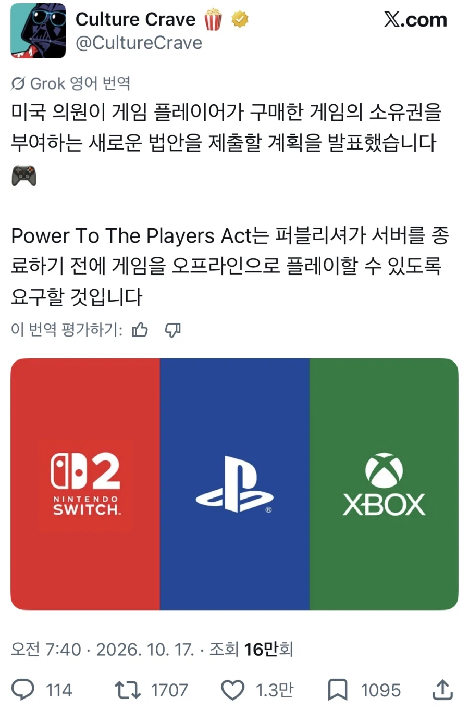

146 · 14 · 7 시간 전 · 원문

구매한 게임은 서버종료 해도 오프라인 풀라는 법안
수집 당시 댓글 14개
oipddgr · 6 시간 전
마켓 닫히면 산것도 못받을텐데 당연히 있어야지
ㅆㅂ · 6 시간 전
도로보 · 5 시간 전
색 조합이 어디서 많이 보던..
유루캠 · 5 시간 전
캬 지려따
Kia · 5 시간 전
흑흑 동의합니다
아씨근데머지알겟습니다 · 5 시간 전
게임좀 해본 새끼인가보네
하버나 · 5 시간 전
내 게임은 내꺼라고
다메요 · 4 시간 전
키햐 이거제
nhdta · 4 시간 전
오 이거지 겜 접을거면 혼자라도 하게 해달라고 ㅠ
정중한싸대기 · 4 시간 전
이쉬벌 당연한건데 이게 진짜
젠젠메챠시골 · 3 시간 전
우리나라도 좀 입법해야...
옛계정은어디갔나몰라 · 2 시간 전
이게 ㅅㅂ 당연해야 되는데
랩개드립NPC · 42 분 전
미 의회 의원들 일 잘하네
대사치 · 1 분 전
찬성합니다~


마켓 닫히면 산것도 못받을텐데 당연히 있어야지